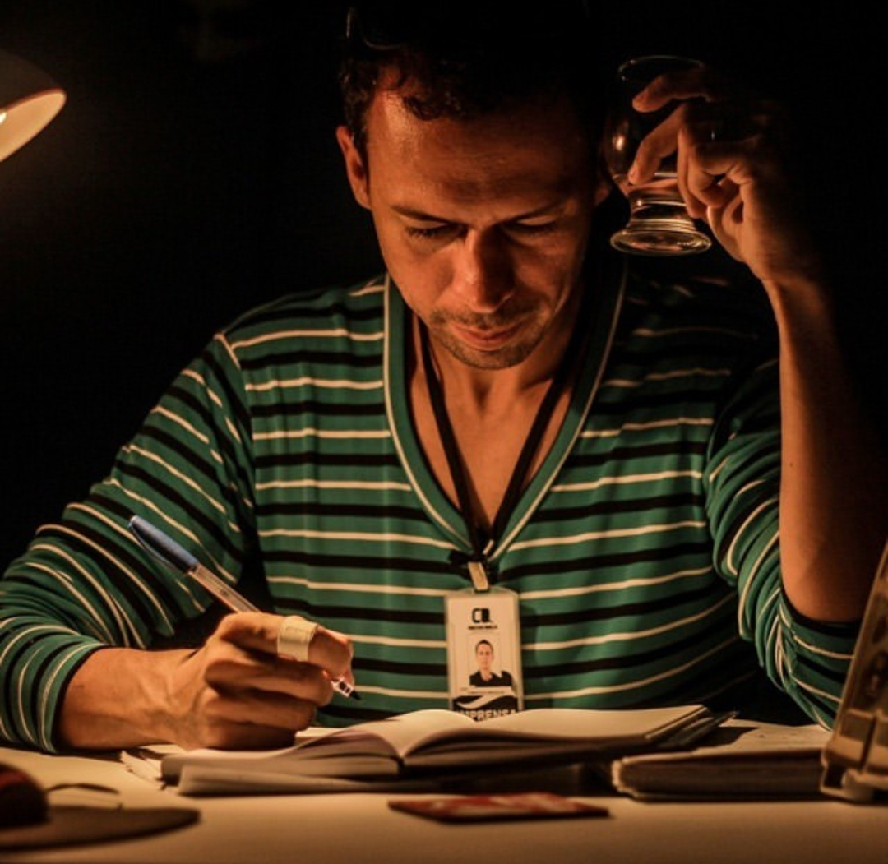
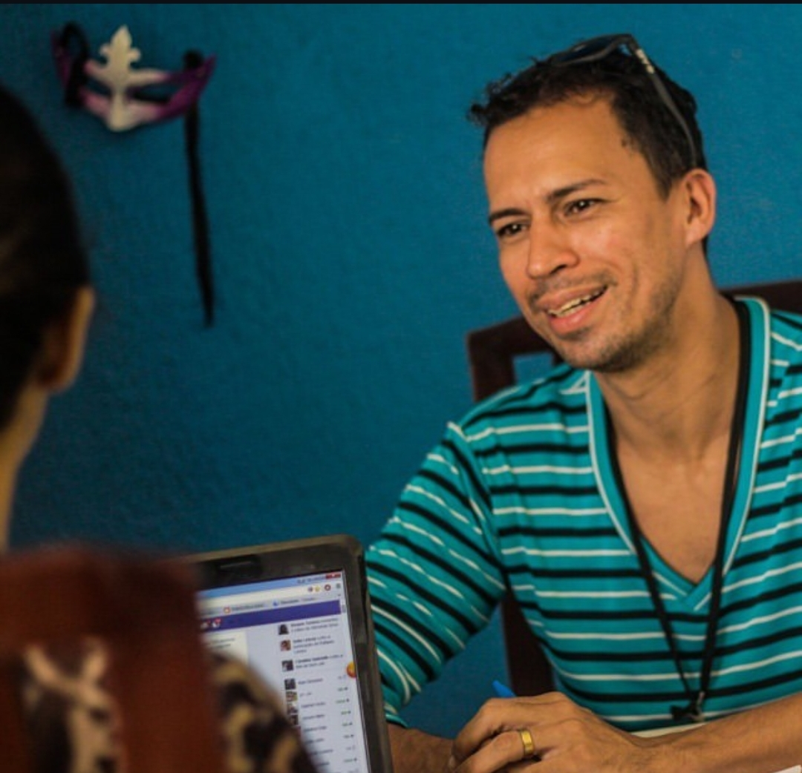
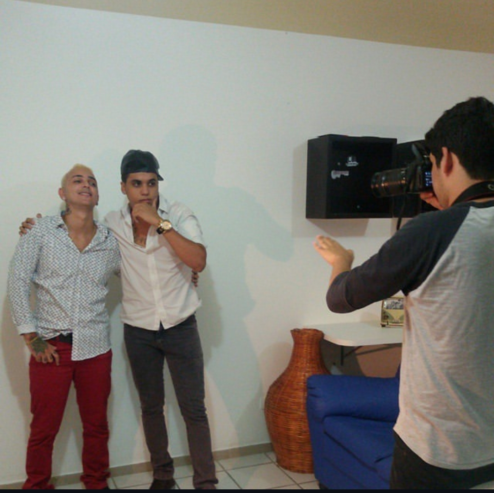
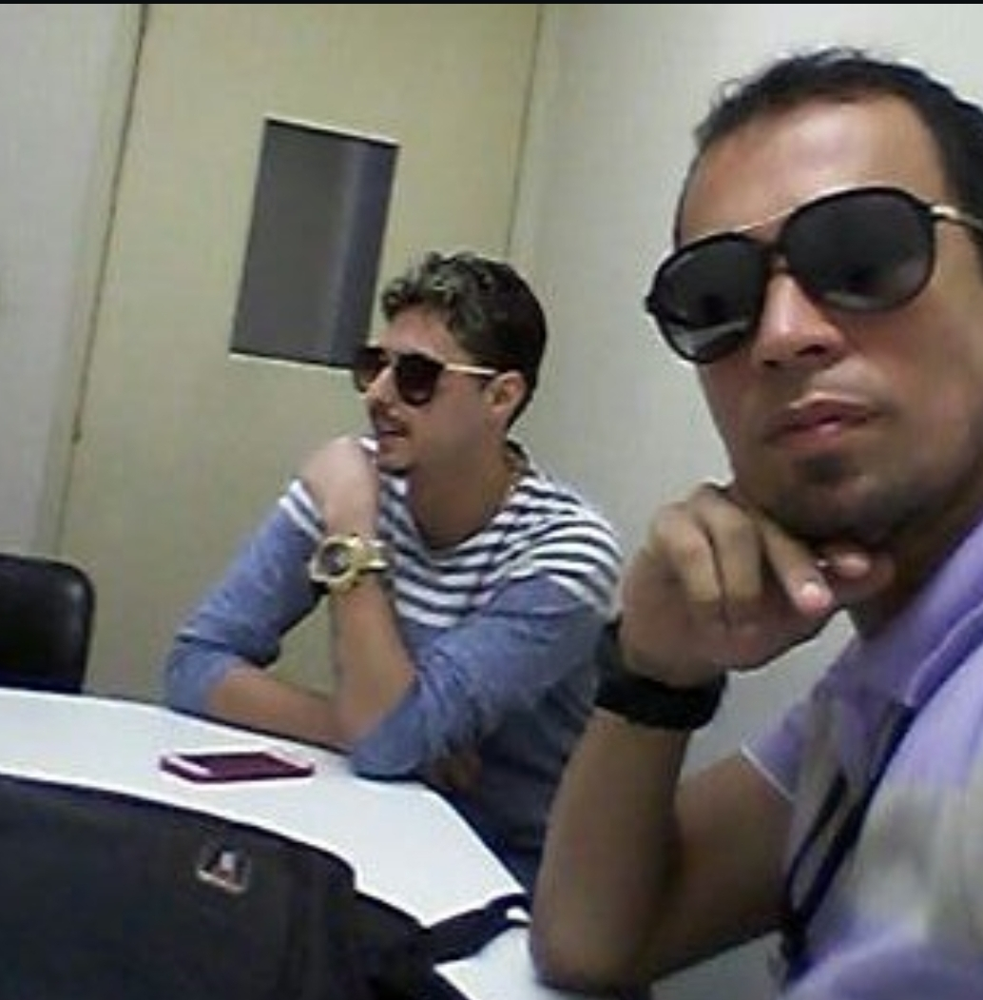
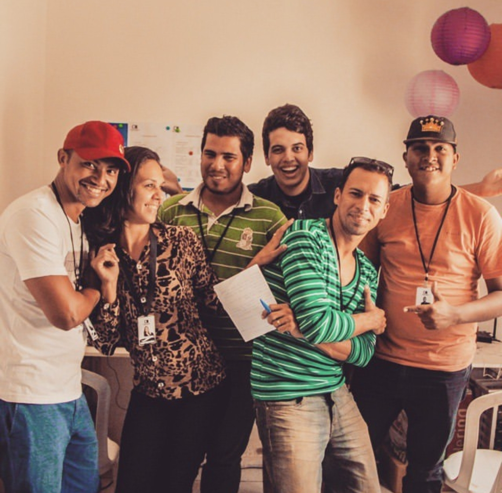
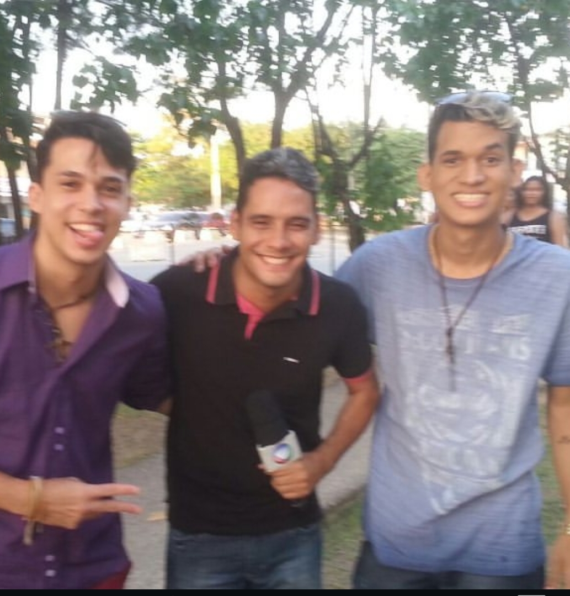
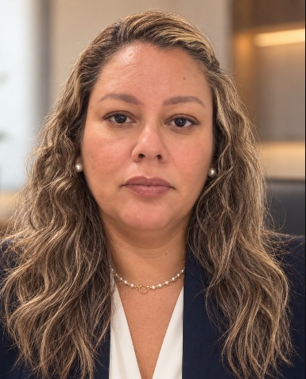
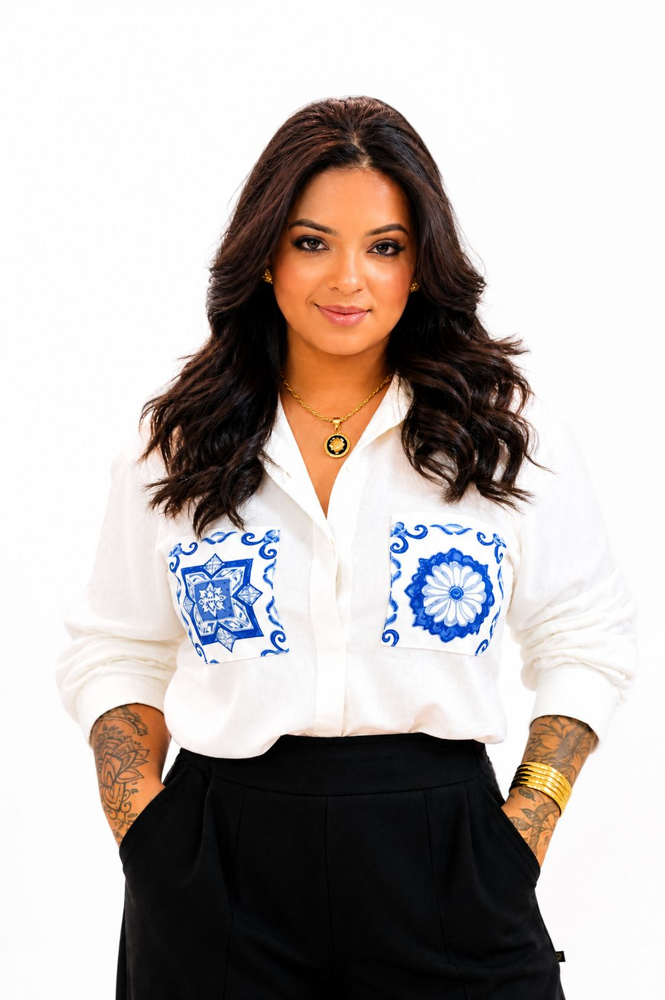

O início
A CD Assessoria nasceu a partir de uma necessidade do próprio Christian Douglas. Antes da criação da agência, ele já atuava como bailarino, coreógrafo, diretor e profissional ligado à produção e comunicação.
CD Assessoria • Recife, PE
Estratégia, comunicação e produção para transformar presença em movimento.
Conheça a CD ↘ Fundador
FundadorQuem conduz
Bailarino, coreógrafo, diretor e fundador da CD Assessoria
Christian Douglas não está apenas por trás da CD Assessoria: possui uma trajetória própria dentro do mercado artístico e audiovisual, atuando como bailarino, coreógrafo, diretor e roteirista, além de profissional ligado à produção artística, à comunicação e à divulgação.
Ao longo da carreira, acumulou experiência na produção e direção de mais de 86 videoclipes, além de ter trabalhado com grandes nomes da música pernambucana e nacional.
Trajetória



A CD Assessoria nasceu a partir de uma necessidade do próprio Christian Douglas. Antes da criação da agência, ele já atuava como bailarino, coreógrafo, diretor e profissional ligado à produção e comunicação.
Ao desenvolver seus trabalhos, Christian percebeu que não bastava possuir talento: era necessário conseguir visibilidade, comunicação, divulgação e posicionamento para chegar às pessoas certas.
No início, fazia pessoalmente a divulgação, visitando redações de jornais, emissoras de televisão e rádios. Essa experiência permitiu entender as dificuldades dos artistas para conseguir espaço na mídia.
O projeto começou em casa, em uma sala, com uma equipe inicial de aproximadamente 5 a 10 pessoas. A proposta era conectar artistas, comunicação, produção, divulgação e oportunidades.
Com o passar do tempo, a CD passou a atuar em projetos maiores, com nomes importantes de Pernambuco e do cenário nacional, participando também de licitações, concorrências e disputas com grandes agências de marketing do Brasil.
Sobre a CD



A CD Assessoria atua nos bastidores para que talentos, empresas e projetos sejam vistos, compreendidos e lembrados.
Fundada por Christian Douglas em 27 de fevereiro de 2015, a agência atua no mercado artístico, cultural, empresarial e de entretenimento, ao lado de artistas, empresas, profissionais e projetos que movimentam Pernambuco.
O trabalho vai além de divulgar: envolve organizar a agenda, aproximar contatos, alinhar comunicação, produzir conteúdo, desenvolver presença digital e ajudar cada cliente a manter visibilidade constante nas redes, na imprensa e no mercado.
É uma atuação de bastidor, mas com resultado visível: mais organização, mais estrutura e mais visibilidade para quem trabalha com a CD Assessoria.
O que fazemos
Uma atuação integrada para artistas, empresas, profissionais e projetos que precisam ocupar seu espaço com clareza.
+ Clique em cada serviço para ver os detalhes
Acompanhamento próximo da carreira, do negócio ou do projeto, apoiando decisões e organizando a presença profissional desde a concepção. A CD ajuda a transformar objetivos em próximos passos claros, conectando planejamento, relacionamento e oportunidades para que cada trabalho avance com mais segurança.
Organização e divulgação das informações sobre trabalhos, lançamentos, campanhas e agenda de artistas, empresas e profissionais. A comunicação traduz cada projeto para o público certo, fortalece sua imagem e mantém sua presença ativa nos canais e momentos que importam.
Imagem, registro e produção audiovisual para contar cada projeto com consistência e presença. A CD pensa no formato, na linguagem e na execução de cada conteúdo para registrar experiências, apresentar trabalhos e criar materiais que continuem gerando visibilidade depois da entrega.
Estratégia e execução para sustentar a presença online de artistas, empresas, clínicas, médicos e profissionais. O trabalho reúne conteúdo, design, redes sociais, campanhas e estrutura digital para construir uma presença mais organizada, constante e conectada aos objetivos de cada cliente.
Carreiras, lançamentos, shows, videoclipes e projetos culturais.
Marcas, negócios, projetos institucionais e comunicação digital.
Clínicas, médicos e profissionais que precisam de comunicação clara e consistente.
Conteúdo & posicionamento
Sua marca não precisa apenas estar presente. Precisa ser reconhecida.
Falar sobre seu projeto ↗Sua marca não precisa apenas estar presente. Precisa ser reconhecida.
No ambiente digital, a presença de uma marca é construída a cada publicação, a cada interação e a cada oportunidade de comunicação. Por isso, administrar redes sociais exige muito mais do que manter um perfil ativo. Exige planejamento, consistência e uma visão clara de como apresentar cada projeto ao público.
Na CD Assessoria, trabalhamos a administração de redes sociais como parte da construção da imagem e do posicionamento de artistas, empresas e profissionais. Desenvolvemos estratégias de conteúdo, organizamos a comunicação, cuidamos da presença digital e planejamos tráfego pago para empresas e profissionais, respeitando a identidade, os objetivos e a forma como cada cliente deseja ser percebido.
Da organização do calendário de publicações à criação de conteúdos e acompanhamento do desempenho, buscamos transformar as redes sociais em um espaço de comunicação, relacionamento e fortalecimento de marca.
Porque uma presença digital bem construída não acontece por acaso. É resultado de estratégia, dedicação e direção.
O que fazemos
Segurança & estratégia
Segurança jurídica para transformar ideias em projetos culturais e sociais sólidos, regulares e preparados para crescer.
Falar sobre um projeto ↗Implementar iniciativas culturais e sociais exige mais do que boa intenção: é preciso cumprir normas, organizar documentação e antecipar riscos desde o planejamento até a execução.
A CD ASSESSORIA oferece assessoria jurídica para projetos, ONGs e associações, com foco em desburocratizar processos, fortalecer a estrutura institucional e proteger cada etapa da ação.
Com esse suporte, gestores e criadores podem manter o foco no impacto de suas atividades, sabendo que a parte legal está alinhada com os objetivos e com a missão da organização.
Como atuamos
Orientação completa para a criação de Organizações da Sociedade Civil (OSCs), com elaboração de estatutos, atas, registros em cartório e adequação fiscal e documental.
Estruturação jurídica para iniciativas em lei de incentivo, editais públicos e demandas institucionais, garantindo conformidade com requisitos legais, contratuais e administrativos.
Redação e análise de termos com fornecedores, patrocinadores, prestadores de serviço e equipe técnica, prevenindo ambiguidades, riscos e passivos jurídicos.
Acompanhamento de recebíveis e atuação na cobrança e renegociação de débitos, reduzindo a inadimplência e preservando a saúde financeira da instituição.
Prevenção de irregularidades em prestação de contas, direitos autorais, propriedade intelectual e questões trabalhistas, com orientação estratégica para evitar conflitos.

Daniele Fernanda / advocaciaAdvogada e agente cultural com trajetória profissional iniciada em 2002 na gestão pública. Sua experiência inclui atuação na Secretaria de Cultura de Olinda, na Fundação do Patrimônio Histórico e Artístico de Pernambuco Fundarpe e na Secretaria de Cultura do Estado de Pernambuco.
Atua na área jurídica cultural e social, com experiência em políticas públicas de cultura, editais, chamamentos públicos, recursos administrativos, pareceres, projetos culturais, contratos e acompanhamento de processos administrativos. A vivência construída no poder público e no setor cultural proporciona uma atuação jurídica técnica, preventiva e conectada à realidade de artistas, produtores, gestores, coletivos, associações e organizações da sociedade civil.
Produção & estratégia
Transformar uma ideia sonora em um projeto de impacto exige sensibilidade artística, visão de mercado e precisão técnica.
Falar sobre um projeto ↗A CD ASSESSORIA atua de ponta a ponta na produção musical, oferecendo suporte estratégico e prático para quem está iniciando a carreira e para artistas e empresas já consolidadas no mercado.
Atendemos a uma ampla variedade de gêneros, como sertanejo, forró, samba, pagode, gospel e diversos outros, entregando a solução ideal para a necessidade de cada cliente.
Como atuamos
Curadoria especializada na escolha e organização de faixas autorais ou inéditas, construindo uma identidade marcante e alinhada ao perfil do projeto.
Arranjos, direção musical, gravação, mixagem e masterização de alto padrão para bandas e cantores em carreira solo.
Criação e direção sonora para produções artísticas, desde grandes espetáculos profissionais até projetos escolares e institucionais.
Desenvolvimento de trilhas sonoras, jingles e spots publicitários sob medida para fortalecer campanhas, marcas e comerciais.
Suporte completo desde a concepção do primeiro trabalho autoral até o reposicionamento e a produção de artistas com bagagem no mercado.
 Rani Viana / produção musical
Rani Viana / produção musicalCom estrutura técnica, experiência no mercado e visão estratégica, a CD ASSESSORIA oferece soluções completas para artistas e projetos musicais, unindo qualidade, profissionalismo e dedicação para fortalecer carreiras e destacar talentos no cenário musical.
Rani Viana atua como cantor e compositor desde 2004, construindo uma trajetória marcada pela participação em bandas como Raios de Neon e Pinguim. Ao longo de sua carreira, também se destacou como compositor, com obras gravadas por nomes como Garota Safada, Limão com Mel, Saia Rodada, Mano Walter, Solteirões do Forró e Forró dos Plays.
Com essa experiência, a CD ASSESSORIA busca oferecer aos seus clientes um atendimento personalizado, suporte estratégico e soluções que respeitem a identidade de cada artista. Nosso compromisso é contribuir para o crescimento de projetos musicais, valorizando o talento, a criatividade e o profissionalismo em cada trabalho realizado.
Portfólio
Um recorte da presença, dos bastidores e dos trabalhos que fazem parte da CD.
Os projetos apresentados são um recorte do acervo atual. Ver mais no Instagram ↗
Rede
Marcas e profissionais que fazem parte da rede da CD Assessoria.
Equipe
Uma equipe multidisciplinar para acompanhar cada parte do trabalho.

Responsável pela direção geral da CD Assessoria e pela condução estratégica dos projetos.

Atua diretamente ligada à Direção Geral, dando suporte às demandas de produção e organização dos projetos.

Responsável pelo suporte direto ao cantor, incluindo figurino, maquiagem, agenda, camarim e demais demandas de produção.
Responsável pelas atividades relacionadas à mídia, comunicação visual e design.

Responsável pelas atividades relacionadas à captação de recursos e oportunidades para projetos.

Responsável pelo site e pela área tecnológica da empresa, incluindo desenvolvimento, manutenção e evolução da estrutura digital.

Responsável pela imagem fotográfica da CD Assessoria, atuando na produção, registro e construção visual dos projetos, artistas, eventos e trabalhos.
Responsável pela produção, coordenação e organização de eventos, apresentações e projetos de ballet.
Contato
Entre em contato com a CD Assessoria.